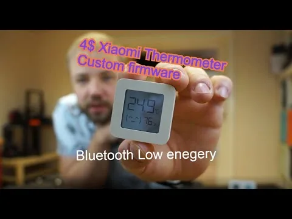

ATC MiThermometer
- Upstream describes custom firmware for the Xiaomi LYWSD03MMC thermometer plus a Telink flashing tool.

- 1/5 dimensions have verifiable sources
- Repository metadata supports only docs/community. Other dimensions remain null, so this discovery stays To verify and is not yet rated.
Candidate route
- Candidate use Evaluate local broadcasting and configurable firmware for an existing thermometer
- Hardware scope Xiaomi LYWSD03MMC and related Telink thermometers explicitly listed in the README
- What is known Upstream describes custom firmware for the Xiaomi LYWSD03MMC thermometer plus a Telink flashing tool.
- GitHub Custom firmware for the Xiaomi Thermometer LYWSD03MMC and Telink Flasher via USB to Serial converter
- Evidence note Repository metadata/README points to Xiaomi LYWSD03MMC and related Telink thermometers explicitly listed in the README; this pass confirmed the upstream material only and did not verify installation, compatibility, or rollback on an exact device, so the entry remains an E0 discovery lead.
- Deep-audit outcome The author README names LYWSD03MMC hardware revisions, documents OTA and serial unbrick procedures, links stock recovery firmware, and provides an author hardware demonstration plus web flasher, supporting E2.
- Review record PS-atc-mi-thermometer · 2026-10-24
Before you start
- Do not flash, disassemble, or buy parts without installation and recovery material for the exact model, hardware revision, and firmware.
Repository snapshot
- Archived No; not archived when checked
- Last push 2025-01-15T12:16:43Z
- Default branch master
- API license identifier Unknown / UNKNOWN
- The license snapshot does not automatically cover firmware, models, images, trademarks, or third-party components; a recent push does not prove compatibility.